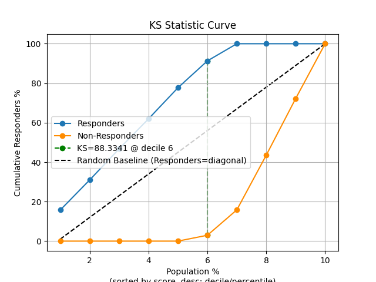
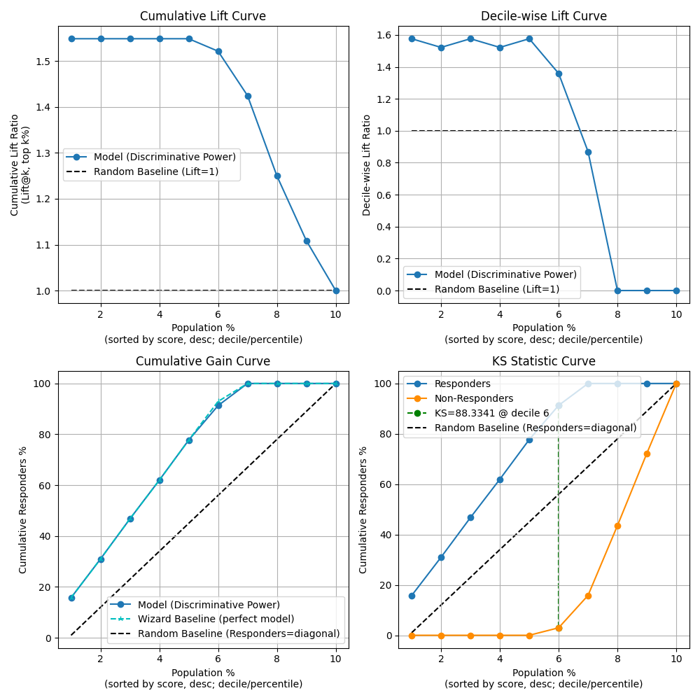

plot_kdsplot_script with examples#
An example showing the kdsplot function
used by a scikit-learn regressor.
9 # Authors: The scikit-plots developers
10 # SPDX-License-Identifier: BSD-3-Clause
Import scikit-plot
14 import scikitplot.snsx as sp
18 import matplotlib.pyplot as plt
19 import numpy as np; np.random.seed(0) # reproducibility
20 import pandas as pd
21
22 from sklearn.datasets import (
23 load_breast_cancer as data_2_classes,
24 # load_iris as data_3_classes,
25 )
26 from sklearn.linear_model import LogisticRegression
27 from sklearn.model_selection import train_test_split
Load the data X, y = data_3_classes(return_X_y=True, as_frame=False)
33 X, y = data_2_classes(return_X_y=True, as_frame=False)
34 X_train, X_val, y_train, y_val = train_test_split(X, y, test_size=0.5, random_state=0)
35 np.unique(y)
array([0, 1])
Create an instance of the LogisticRegression
39 model = (
40 LogisticRegression(max_iter=int(1e5), random_state=0)
41 .fit(X_train, y_train)
42 )
43 # Perform predictions
44 y_val_prob = model.predict_proba(X_val)
45 # Create a DataFrame with predictions
46 df = pd.DataFrame({
47 "y_true": y_val==1, # target class (0,1,2)
48 "y_score": y_val_prob[:, 1], # target class (0,1,2)
49 # "y_true": np.random.normal(0.5, 0.1, 100).round(),
50 # "y_score": np.random.normal(0.5, 0.15, 100),
51 # "hue": np.random.normal(0.5, 0.4, 100).round(),
52 })
57 p = sp.kdsplot(
58 df,
59 x="y_true",
60 y="y_score",
61 kind="df",
62 n_deciles=10,
63 round_digits=4,
64 verbose=True,
65 )
66 p
67 # p.columns.tolist()
68 # p[["decile", "cnt_resp", "cnt_resp_wiz", "cum_resp_pct", "cum_resp_wiz_pct"]]
69 p.iloc[:, range(9, 23)]
70 # p.iloc[:, [11, 12, 12, 14]]
{
"decile": "Meaning: Ranked group (1 = highest predicted probability). Critical: Ensure sorted descending by model score. Fatal if top deciles don't capture positives.Formula: rank by model score into k quantiles (e.g., 10 deciles). ",
"prob_min": "Meaning: Lowest predicted probability in the decile. Critical: Signals model calibration. Fatal if too close to prob_max (poor ranking).Formula: min(score in decile). ",
"prob_max": "Meaning: Highest predicted probability in the decile. Critical: Checks separation. Fatal if overlaps lower deciles (poor discrimination).Formula: max(score in decile). ",
"prob_avg": "Meaning: Average predicted probability in the decile. Critical: Useful for calibration curves; should decrease monotonically across deciles.Formula: mean(score in decile). ",
"cnt_resp_total": "Meaning: Total samples in the decile. Critical: Denominator for rate_resp and cumulative % calculations. Fatal if deciles uneven.Formula: count(samples in decile). ",
"cnt_resp": "Meaning: Actual responders in the decile (how many responders we captured). Critical: Should never exceed cnt_resp_wiz. Flat counts across deciles indicate useless model.Formula: sum(y_true=1 in decile). ",
"cnt_resp_non": "Meaning: Non-responders in the decile. Critical: Used for KS/statistics. Too high in top deciles is a warning.Formula: cnt_resp_total - cnt_resp. ",
"cnt_resp_rndm": "Meaning: Expected responders if randomly assigned. Critical: Baseline for comparison. Fatal if model only slightly above random.Formula: cnt_resp_total * (total_responders / total_samples). ",
"cnt_resp_wiz": "Meaning: Ideal responders if model were perfect. Critical: Must be ≥ cnt_resp. Fatal if NaN or actual far below.Formula: allocate top responders directly into highest deciles. ",
"rate_resp": "Meaning: Per-decile response rate (alias to decile_wise_response, decile_wise_gain). Critical: Measures decile quality. Early deciles should outperform later ones.Formula: rate_resp = decile_wise_response = cnt_resp / cnt_resp_total. ",
"cum_resp_total": "Meaning: Cumulative total samples. Critical: Tracks population coverage.Formula: Σ cnt_resp_total(≤ current decile). ",
"cum_resp_total_pct": "Meaning: % cumulative population. Critical: X-axis for lift/gain curves; check decile balance.Formula: cum_resp_total / total_samples * 100. ",
"cum_resp": "Meaning: Cumulative responders (alias to cumulative_gain) up to this decile so ML evaluation (how much `gain` vs random baseline). Critical: Should increase; max = total responders. Flat curve = weak model.Formula: cumulative_gain = cumulative_response = Σ cnt_resp(≤ current decile) = cum_resp_pct vs cum_resp_total_pct. ",
"cum_resp_pct": "Meaning: % cumulative responders = cum_resp / total_responders * 100. Critical: Wizard curve should be ≥ model; used in lift/gain charts.Formula: cum_resp / total_responders * 100. ",
"cum_resp_non": "Meaning: Cumulative non-responders. Critical: Used in KS statistic; early dominance is bad.Formula: Σ cnt_resp_non(≤ current decile). ",
"cum_resp_non_pct": "Meaning: % cumulative non-responders. Critical: Should differ from cum_resp_pct; almost equal = model fails.Formula: cum_resp_non / total_nonresponders * 100. ",
"cum_resp_rndm": "Meaning: Cumulative expected responders if randomly assigned. Critical: Baseline for cumulative lift. Fatal if model ≈ random curve.Formula: Σ cnt_resp_rndm(≤ current decile). ",
"cum_resp_rndm_pct": "Meaning: % cumulative random responders = cum_resp_rndm / total_responders * 100. Critical: Random baseline curve (diagonal). Always linear from (0,0) to (100,100). Fatal if model curve is near or below it.Formula: cum_resp_rndm / total_responders * 100. ",
"cum_resp_wiz": "Meaning: Cumulative ideal responders. Critical: Should always ≥ model; never NaN.Formula: Σ cnt_resp_wiz(≤ current decile). ",
"cum_resp_wiz_pct": "Meaning: % cumulative ideal responders. Critical: Wizard benchmark for lift/gain curves; gaps indicate model weakness.Formula: cum_resp_wiz / total_responders * 100. ",
"KS": "Meaning: KS Kolmogorov-Smirnov statistic. Range: 0-100 (percent scale) or 0-1 (fractional scale). Interpretation: - <20 → Poor discrimination (model barely better than random). - 20-40 → Fair. - 40-60 → Good. - ≥60 → Excellent. - ≥70 → Suspiciously high; likely overfitting or data leakage unless justified by very strong signal. Critical: Report max KS and check across train/validation/test. Fatal if KS is too low (<0.2) or unrealistically high (≥0.7 without strong justification).Formula: KS = max(cum_resp_pct - cum_resp_non_pct). ",
"cumulative_lift": "Meaning: Cumulative lift = cum_resp_pct / cum_resp_total_pct. Critical: Shows model gain over random. Always cumulative. Fatal if <1 or <2 in top decile.Formula: Lift@k = cum_resp_pct / cum_resp_total_pct. ",
"decile_wise_lift": "Meaning: Decile-wise lift = cnt_resp / cnt_resp_rndm. Critical: Measures decile-level improvement vs random. Fatal if <1.Formula: cnt_resp / cnt_resp_rndm. "
}
74 p = sp.kdsplot(df, x="y_true", y="y_score", kind="cumulative_lift", n_deciles=10)

77 p = sp.kdsplot(df, x="y_true", y="y_score", kind="decile_wise_lift", n_deciles=10)

80 p = sp.kdsplot(df, x="y_true", y="y_score", kind="cumulative_gain", n_deciles=10)

83 p = sp.kdsplot(df, x="y_true", y="y_score", kind="cumulative_response", n_deciles=10)

86 p = sp.kdsplot(df, x="y_true", y="y_score", kind="decile_wise_gain", n_deciles=10)

89 p = sp.kdsplot(df, x="y_true", y="y_score", kind="ks_statistic", n_deciles=10)

92 fig, ax = plt.subplots(figsize=(10, 10))
93 p = sp.kdsplot(
94 df,
95 x="y_true",
96 y="y_score",
97 kind="report",
98 n_deciles=10,
99 round_digits=6,
100 verbose=True,
101 )

{
"decile": "Meaning: Ranked group (1 = highest predicted probability). Critical: Ensure sorted descending by model score. Fatal if top deciles don't capture positives.Formula: rank by model score into k quantiles (e.g., 10 deciles). ",
"prob_min": "Meaning: Lowest predicted probability in the decile. Critical: Signals model calibration. Fatal if too close to prob_max (poor ranking).Formula: min(score in decile). ",
"prob_max": "Meaning: Highest predicted probability in the decile. Critical: Checks separation. Fatal if overlaps lower deciles (poor discrimination).Formula: max(score in decile). ",
"prob_avg": "Meaning: Average predicted probability in the decile. Critical: Useful for calibration curves; should decrease monotonically across deciles.Formula: mean(score in decile). ",
"cnt_resp_total": "Meaning: Total samples in the decile. Critical: Denominator for rate_resp and cumulative % calculations. Fatal if deciles uneven.Formula: count(samples in decile). ",
"cnt_resp": "Meaning: Actual responders in the decile (how many responders we captured). Critical: Should never exceed cnt_resp_wiz. Flat counts across deciles indicate useless model.Formula: sum(y_true=1 in decile). ",
"cnt_resp_non": "Meaning: Non-responders in the decile. Critical: Used for KS/statistics. Too high in top deciles is a warning.Formula: cnt_resp_total - cnt_resp. ",
"cnt_resp_rndm": "Meaning: Expected responders if randomly assigned. Critical: Baseline for comparison. Fatal if model only slightly above random.Formula: cnt_resp_total * (total_responders / total_samples). ",
"cnt_resp_wiz": "Meaning: Ideal responders if model were perfect. Critical: Must be ≥ cnt_resp. Fatal if NaN or actual far below.Formula: allocate top responders directly into highest deciles. ",
"rate_resp": "Meaning: Per-decile response rate (alias to decile_wise_response, decile_wise_gain). Critical: Measures decile quality. Early deciles should outperform later ones.Formula: rate_resp = decile_wise_response = cnt_resp / cnt_resp_total. ",
"cum_resp_total": "Meaning: Cumulative total samples. Critical: Tracks population coverage.Formula: Σ cnt_resp_total(≤ current decile). ",
"cum_resp_total_pct": "Meaning: % cumulative population. Critical: X-axis for lift/gain curves; check decile balance.Formula: cum_resp_total / total_samples * 100. ",
"cum_resp": "Meaning: Cumulative responders (alias to cumulative_gain) up to this decile so ML evaluation (how much `gain` vs random baseline). Critical: Should increase; max = total responders. Flat curve = weak model.Formula: cumulative_gain = cumulative_response = Σ cnt_resp(≤ current decile) = cum_resp_pct vs cum_resp_total_pct. ",
"cum_resp_pct": "Meaning: % cumulative responders = cum_resp / total_responders * 100. Critical: Wizard curve should be ≥ model; used in lift/gain charts.Formula: cum_resp / total_responders * 100. ",
"cum_resp_non": "Meaning: Cumulative non-responders. Critical: Used in KS statistic; early dominance is bad.Formula: Σ cnt_resp_non(≤ current decile). ",
"cum_resp_non_pct": "Meaning: % cumulative non-responders. Critical: Should differ from cum_resp_pct; almost equal = model fails.Formula: cum_resp_non / total_nonresponders * 100. ",
"cum_resp_rndm": "Meaning: Cumulative expected responders if randomly assigned. Critical: Baseline for cumulative lift. Fatal if model ≈ random curve.Formula: Σ cnt_resp_rndm(≤ current decile). ",
"cum_resp_rndm_pct": "Meaning: % cumulative random responders = cum_resp_rndm / total_responders * 100. Critical: Random baseline curve (diagonal). Always linear from (0,0) to (100,100). Fatal if model curve is near or below it.Formula: cum_resp_rndm / total_responders * 100. ",
"cum_resp_wiz": "Meaning: Cumulative ideal responders. Critical: Should always ≥ model; never NaN.Formula: Σ cnt_resp_wiz(≤ current decile). ",
"cum_resp_wiz_pct": "Meaning: % cumulative ideal responders. Critical: Wizard benchmark for lift/gain curves; gaps indicate model weakness.Formula: cum_resp_wiz / total_responders * 100. ",
"KS": "Meaning: KS Kolmogorov-Smirnov statistic. Range: 0-100 (percent scale) or 0-1 (fractional scale). Interpretation: - <20 → Poor discrimination (model barely better than random). - 20-40 → Fair. - 40-60 → Good. - ≥60 → Excellent. - ≥70 → Suspiciously high; likely overfitting or data leakage unless justified by very strong signal. Critical: Report max KS and check across train/validation/test. Fatal if KS is too low (<0.2) or unrealistically high (≥0.7 without strong justification).Formula: KS = max(cum_resp_pct - cum_resp_non_pct). ",
"cumulative_lift": "Meaning: Cumulative lift = cum_resp_pct / cum_resp_total_pct. Critical: Shows model gain over random. Always cumulative. Fatal if <1 or <2 in top decile.Formula: Lift@k = cum_resp_pct / cum_resp_total_pct. ",
"decile_wise_lift": "Meaning: Decile-wise lift = cnt_resp / cnt_resp_rndm. Critical: Measures decile-level improvement vs random. Fatal if <1.Formula: cnt_resp / cnt_resp_rndm. "
}
decile prob_min prob_max ... KS cumulative_lift decile_wise_lift
0 1 0.999898 0.999998 ... 15.760870 1.548913 1.576087
1 2 0.999395 0.999897 ... 30.978261 1.548913 1.521739
2 3 0.997622 0.999376 ... 46.739130 1.548913 1.576087
3 4 0.992830 0.997497 ... 61.956522 1.548913 1.521739
4 5 0.959560 0.992494 ... 77.717391 1.548913 1.576087
5 6 0.771810 0.955756 ... 88.334051 1.521739 1.358696
6 7 0.065823 0.769488 ... 84.158416 1.425000 0.869565
7 8 0.000369 0.048060 ... 56.435644 1.250000 0.000000
8 9 0.000001 0.000349 ... 27.722772 1.108949 0.000000
9 10 0.000000 0.000001 ... 0.000000 1.000000 0.000000
[10 rows x 23 columns]
Total running time of the script: (0 minutes 1.441 seconds)
Related examples